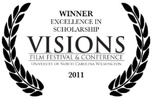
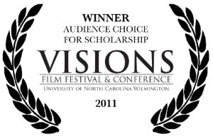

about
media
support
Hosted by the UNCW Department of Film Studies, Visions is the first international film festival and conference showcasing exclusively undergraduate filmmakers and scholars together in one forum. Conference presentations will follow Zubizarreta’s address with two blocks at 10:30 a.m. and 3 p.m. The 2012 film scholarship presentation line-up includes:
“My Name is Khan, and I am Not a Terrorist: How My Name is Khan Defies Muslim Stereotypes in Popular Hindi Cinema” by Olivia Simmons (University of North Carolina Wilmington)
Sheds light on the history behind the common portrayal (or lack thereof) of non-Hindu "Others", particularly Muslims, in Bollywood Cinema and examines how the hit film "My Name is Khan" (2010) breaks the norm of these often offensive representations.
“Touki Bouki: Djibril Diop Mambety and the Postcolonial Aesthetic” by Michael Daye (University College Falmouth, United Kingdom)
Daye defines traits of a post-colonialist aesthetic through analysis of a specific work, the Senegalese film Touki Bouki, by exploring particular motifs within the film in the context of Third Cinema.
“War and Poetry: The Use of Genre Violence and Poetic Digression in The Thin Red Line” by Jacob Mertens (University of North Carolina Wilmington)
Mertens argues that The Thin Red Line challenges viewers to integrate both war genre and poetic segments into a holistic understanding of the narrative, allowing the film’s conventional war segments to transcend their base violence – engendering a feeling of beauty and existential depth.
“The Repressed Tension in Haute Tension” by Zulma Y. Terrones (University of Chicago)
Aims to dissect the horror genre’s established gender conventions and how these become complicated when a female murderer replaces the traditional male killer. Terrones' paper and discussion examines how the genre relies on an unbalanced power relationship, where male superiority and woman’s passivity parallels the repressed female status of the patriarchal society that views it.
“Robert Siodmak – His Career and Contributions to Film Noir” by Gregory Baker (North Carolina School of the Arts)
Baker explores Siodmak’s career from UFA through Hollywood and beyond, uncovering important influences on his directorial style and examining how that style benefited his considerable body of work in the film noir genre.
“Bruce Conner Knows That Girls Just Want to Have Fun: Humanist Sexual Liberation in Avant Garde Film” by William Frasca (University of North Carolina Wilmington)
Frasca takes a look at three avant-garde films by Bruce Connor – Cosmic Ray, Breakaway and Marilyn Times Five – and how each of these, as powerful combinations of pop music and film, challenge taboos and cultural norms of female sexuality.
“Action Stars Who Don’t Get Any Action: Hong Kong Actors in U.S. Roles” by Javi Zubizarreta (University of Notre Dame)
The Eastern philosophical view of masculinity and its influence on Hong Kong cinema are examined and compared to Hollywood ideals of masculinity to offer a cross-cultural explanation for the continued emasculation of male Asian actors. A feminist critique is also applied to further the reasoning behind the emasculation and degradation of Asian manhood in Hong Kong and U.S. films.
“A Sadomasochistic Circus: Critique of Society in Lars von Trier’s Breaking the Waves (1996) and Dancer in the Dark (2000)” by Sonya Mladenova (Mel Hoppenheim School of Cinema, Concordia University, Montreal)
Mladenova analyzes Lars von Trier’s critique of mainstream spectator positions through examination of spectatorship, sadomasochism and the role of the protagonists in relation to the aforementioned films.
 |

|
 |
 |  |  |  |

| 2011
AWARD WINNERS |
|  "Lose Yourself in Oz: Memory and Nation in Baz Luhrmann's Australia and the 'Come Walkabout' Tourism Campaign" by Carolyn Lake Flinders University, Australia |
|  "Character Empathy and Moral Judgment in Pre-1908 Cinema" by Matthew Hepburn Warwick University, UK |
Copyright 2011 VISIONS Film Festival and Conference